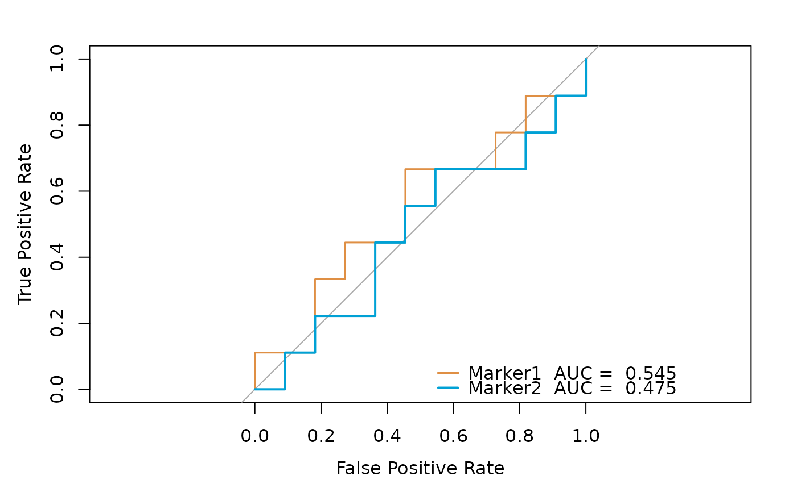

Generates Receiver Operating Characteristic (ROC) curves for multiple predictors and optionally performs statistical comparisons between them.
Usage
sig_roc(
data,
response,
variables,
fig.path = NULL,
main = NULL,
file.name = NULL,
palette = "jama",
cols = NULL,
alpha = 1,
compare = FALSE,
smooth = TRUE,
compare_method = "bootstrap",
boot.n = 100
)Arguments
- data
Data frame containing the predictor variables and binary outcome.
- response
Character. Name of the binary outcome variable in `data`.
- variables
Character vector. Names of predictor variables for ROC curves.
- fig.path
Character or `NULL`. Directory path to save output PDF. Default is `NULL`.
- main
Character or `NULL`. Main title for the ROC plot. Default is `NULL`.
- file.name
Character or `NULL`. Output PDF filename without extension. Default is `"0-ROC of multiple variables"`.
- palette
Character. Color palette for ROC curves. Default is `"jama"`.
- cols
Character vector or `NULL`. Custom colors for ROC curves. Default is `NULL`.
- alpha
Numeric. Transparency level (1 = opaque, 0 = transparent). Default is `1`.
- compare
Logical. Whether to perform statistical comparison of AUCs. Default is `FALSE`.
- smooth
Logical. Whether to smooth ROC curves. Default is `TRUE`.
- compare_method
Character. Method for comparing ROC curves. Default is `"bootstrap"`.
- boot.n
Integer. Number of bootstrap replications. Default is `100`.
Value
A list containing:
- auc.out
Data frame with AUC values and confidence intervals
- legend.name
Vector of legend entries for the plot
- p.out
If `compare = TRUE`, data frame with p-values from comparisons
Examples
# \donttest{
tcga_stad_pdata <- load_data("tcga_stad_pdata")
sig_roc(
data = tcga_stad_pdata, response = "OS_status",
variables = c("TMEscore_plus", "GZMB", "GNLY")
)
#> ℹ Input data preview:
#> Registered S3 method overwritten by 'pROC':
#> method from
#> plot.roc spatstat.explore
#> Setting levels: control = 0, case = 1
#> Setting direction: controls > cases
#> Setting levels: control = 0, case = 1
#> Setting direction: controls < cases
#> Setting levels: control = 0, case = 1
#> Setting direction: controls > cases

#> $auc.out
#> Name AUC AUC CI
#> auc.ci TMEscore_plus 0.564 0.504-0.624
#> auc.ci.1 GZMB 0.493 0.431-0.555
#> auc.ci.2 GNLY 0.507 0.449-0.568
#>
#> $legend.name
#> [1] "TMEscore_plus AUC = 0.564" "GZMB AUC = 0.493"
#> [3] "GNLY AUC = 0.507"
#>
# }